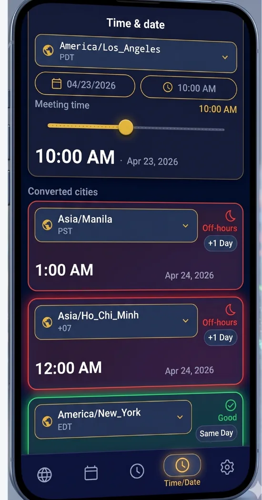
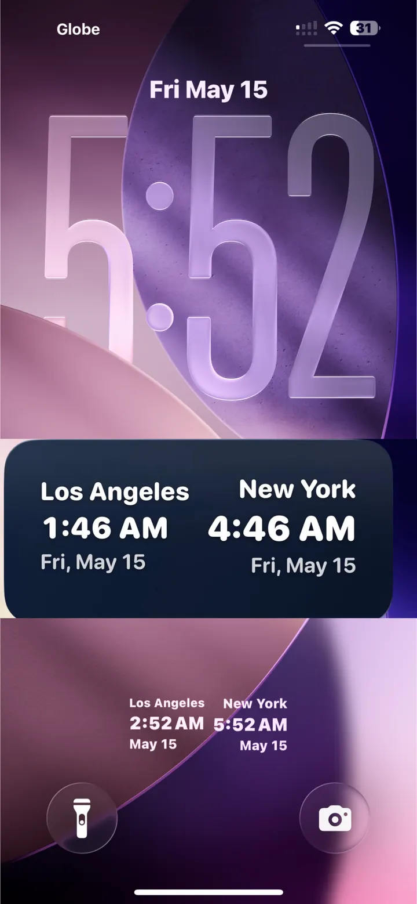
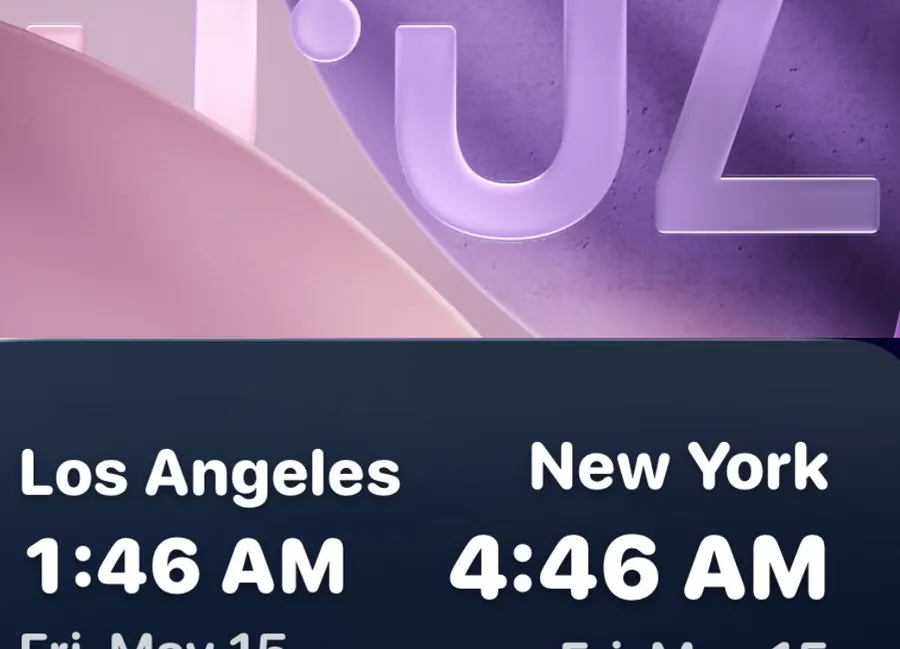

Why travelers use a dual clock
A dual clock shows two cities at once—usually home and where you are (or where you’re flying next). It’s the fastest way to know when to call family, schedule remote meetings, or avoid waking someone at 3 a.m.
The Tripmetic dual clock widget is a world clock built for travel: configure two cities in the app, then pin the widget to your iOS Lock Screen or Android Home Screen. Pair it with the Global Meeting Scheduler when you need full overlap heatmaps.
Here’s how to install the timezone widget on your phone.
1 Configure Your Cities (In-App)
Before adding the widget to your screen, you need to tell Tripmetic which locations to display. Open the Tripmetic app, navigate to the Widget Setup screen, and select your two primary cities. Tap 'Save' to securely lock in your preferences.

2 Apple iOS: Lock Screen Setup
For iPhone users, the Tripmetic widget is designed natively for the iOS 16+ Lock Screen. Follow these steps to add it:
- Lock your phone, then tap and long-press the Lock Screen.
- Tap the Customize button at the bottom, then select Lock Screen.
- Tap the Add Widgets box located just below the time.
- Scroll down the list of apps, tap Tripmetic, and select the Dual Clock widget to add it to your screen.

3 Android: Home Screen Setup
For Android users, the Tripmetic widget provides a sleek, scalable clock block designed for your Home Screen. Follow these steps to deploy it:
- Go to your Android Home Screen and long-press on any empty space.
- Tap the Widgets icon that appears at the bottom of the screen.
- Scroll down your app list until you find Tripmetic and tap to expand it.
- Tap, hold, and drag the Dual Clock widget to your desired position on the Home Screen.

Frequently Asked Questions
No. We built the Tripmetic widget using highly optimized, native system code (WidgetKit for iOS and AppWidgets for Android). It leverages your phone's internal clock rather than constantly pinging our servers, ensuring zero noticeable battery drain.
Absolutely. Whenever you travel to a new destination, simply open the Tripmetic app and update your city selections in the Widget Setup menu. The widget on your home or lock screen will automatically refresh.
Yes. The widget utilizes global IANA timezone standards, meaning it perfectly tracks when different regions of the world spring forward or fall back automatically.